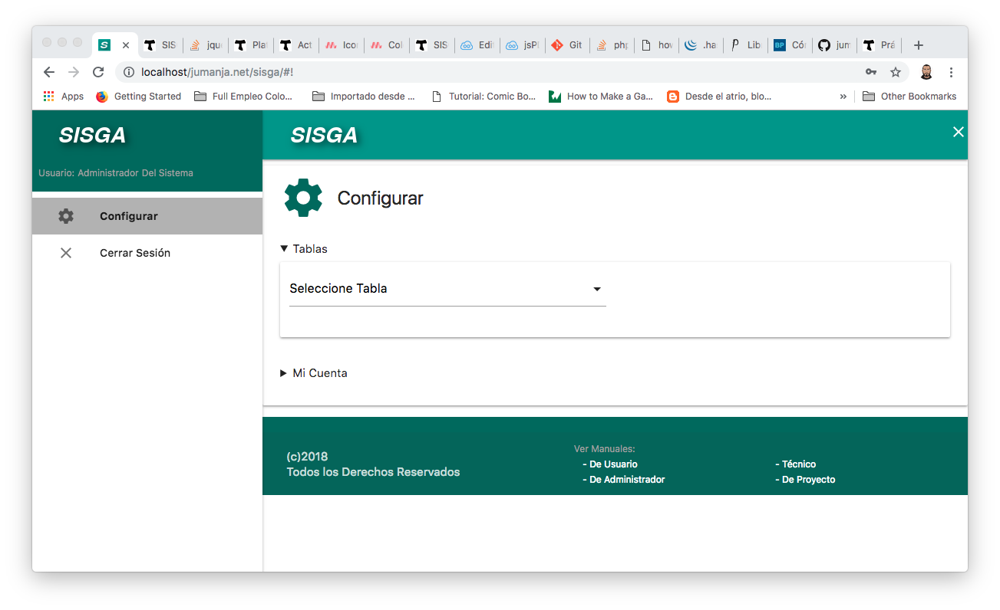
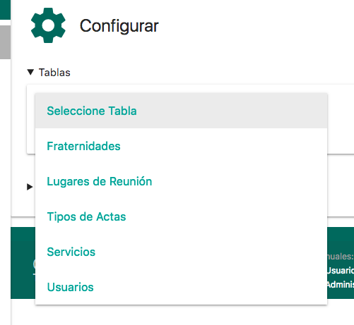
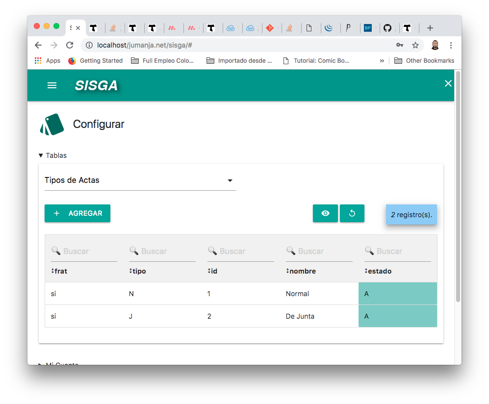
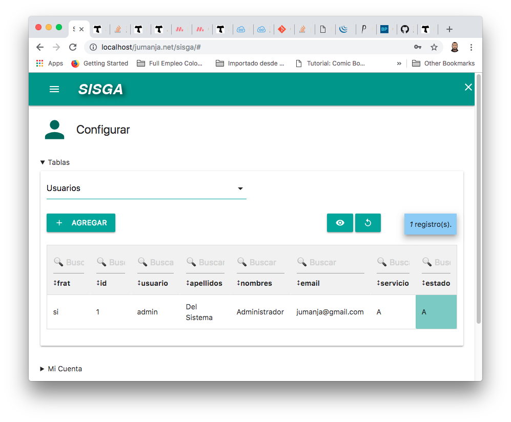

El presente documento recopila los aspectos fundamentales para que el usuario administrador conozca las tablas del sistema, su utilización y opciones de configuración.
Para una completa información paso a paso sobre la utilización y funcionalidades de SISGA, por favor remítase al Manual de Usuario.
Al iniciar sesión con usuario administrador, aparecerá en pantalla la opción de elegir la tabla a configurar:

Al hacerle click podrá ver y elegir la tabla a configurar dentro de la lista:


Permite gestionar las fraternidades del sistema. Sus campos son:
- Frat: Código de fraternidad
- Id: Identificador único, consecutivo de registro de fraternidad
- Estado: Estado del Registro (A- Activo, I- inactivo, R- Retirado)
- Dirección: Dirección o Ubicación de la Fraternidad
- Ciudad: Ciudad de la Fraternidad
- Logo: Nombre del archivo de imagen (.png) que contiene el logo de la Fraternidad
- Email: Dirección de correo electrónico general de la fraternidad
Permite gestionar los lugares en los que se lleva a cabo las reuniones que generan las actas del sistema. Sus campos son:
- Frat: Código de fraternidad
- Lugar: Nombre del lugar de Reunión
- Id: Identificador único, consecutivo de registro de la tabla lugares
- Estado: Estado del Registro (A- Activo, I- inactivo, R- Retirado)

Permite gestionar los tipos de acta a manejar dentro del sistema. Sus campos son:
- Frat: Código de fraternidad
- Tipo: Una letra que identifica al tipo.
- Id: Identificador único, consecutivo de registro de la tabla Tipos de Actas
- Nombre: El nombre relacionado al tipo de acta, por ejemplo, Normal, De Junta.
- Estado: Estado del Registro (A- Activo, I- inactivo, R- Retirado)
Permite gestionar los servicios que prestan los integrantes a la fraternidad dentro del sistema. Sus campos son:
- Servicio: Una Letra que identifica al servicio, ejemplo: S - Secretaría, P - Presidencia...
- TipoServ: Tipo de Servicio, Tenemos tres: I - Integrante de Junta Local, A - Administrador del Sistema, y V - Visitante o Integrante de Junta REgional/Local que solo lo usará para consulta.
- Id: Identificador único, consecutivo de registro de la tabla Servicios
- Nombre: El nombre del Servicio, por ejemplo: Secretario, Presidenta, Tesorero, Formador...
- Estado: Estado del Registro (A- Activo, I- inactivo, R- Retirado)

Permite gestionar los usuarios del sistema. Sus campos son:
- Frat: Código de fraternidad
- Id: Identificador único, consecutivo de registro de la tabla Servicios
- Usuario: Código único del Usuario, que usará para entrar al sistema.
- Apellidos: Apellidos del Usuario.
- Nombres: Nombres del Usuario
- Email: Dirección de correo electrónico del usuario